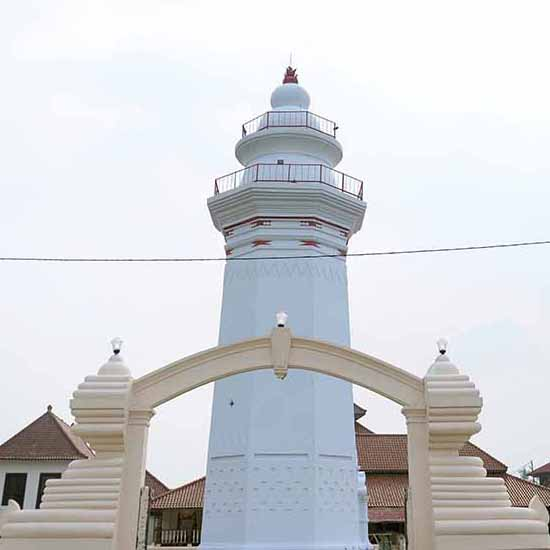
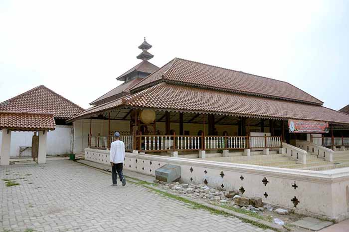
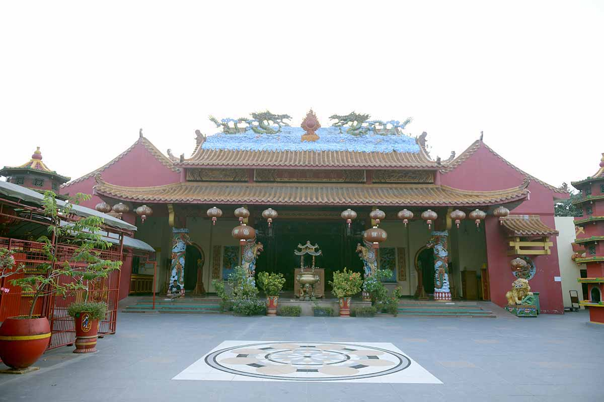

Banten
Banten Menyimpan banyak cerita yang memukau pada masa lampau. Mulai dari statusnya yang pernah menjadi pusat perdagangan dan ramai dikunjungi para pedagang, hingga menjadi kunci penyebaran agama Islam di kawasan yang sekarang menjadi Jakarta dan Jawa Barat. Ziarah ke Banten tidak hanya bisa memperkaya batin, tetapi juga wawasan sejarah.
Nama Banten sudah masyhur sebelum Kesultanan Banten berdiri. Namun, puncak kejayaannya dicapai saat Maulana Hasanuddin berkuasa. Nama sultan yang adalah putra dari Syarief Hidayatullah atau lebih dikenal Sunan Gunung Jati ini juga makin harum lantaran dialah raja pertama yang memerintah Banten dengan mengedepankan budaya Islam.
"Layaknya bangunan masjid kuno, Masjid Agung Banten memiliki kolam di depan bangunan masjid. Kolam ini biasanya digunakan umat untuk tempat wudhu sebelum masuk ke dalam masjid."Kejayaan Banten kala itu tak lepas dari kepiawaian Maulana Hasanuddin, yang tidak hanya cakap dalam hal agama, tetapi juga politik dan ekonomi. Tak heran saat itu Kesultanan Banten memiliki wilayah kekuasaan yang luas, terbentang dari Lampung hingga Karawang.
Sejarah mencatat, Banten pun dengan cepat meraih kejayaan dan mampu mengalahkan Kerajaan Sunda atau Padjadjaran. Patut dicatat, puncak keemasan kesultanan ini dicapai pada masa pemerintahan Sultan Ageng Tirtayasa.
Begitu tersohornya Banten membuat para pedagang dari India, Timur Tengah, hingga Eropa berdatangan. Komoditas lada menjadi yang paling favorit dan dicari. Konon, komoditas dari Banten itu menjadi rebutan antara Portugis dan Belanda.
Kini, kisah kejayaan Kesultanan Banten yang masih tersisa bisa dilihat di Masjid Agung Banten yang berada di Desa Banten, Kecamatan Kasemen, Kabupaten Serang, Banten. Masjid ini masih berdiri kokoh dan menjadi tempat ziarah yang populer.
Percampuran Budaya
Berkunjung ke Masjid Agung Banten tidak membutuhkan waktu yang lama dari Jakarta. Tim Eksplor Ramadhan dengan dukungan dari Isuzu, hanya membutuhkan waktu sekitar 2 jam untuk mencapainya.
Jika tertarik untuk mengunjunginya, Anda bisa mengambil rute Tol Tangerang–Merak dan keluar di pintu Tol Serang Barat. Saat menyambangi Banten Lama, berbagai perbaikan jalan masih dilakukan. Tim Eksplor Ramadhan segera disambut dengan panas terik, jalanan berbatu, dan berdebu.
Untungnya, kendaraan Isuzu MU-X yang digunakan tangguh dan nyaman untuk melewati berbagai tantangan tersebut. Dukungan 5-Link rear suspension dengan gas shock absorbers dan stabilizer bar menjadi salah satu yang mendukung hal tersebut. Sementara itu, hadirnya fitur AC otomatis yang bisa disesuaikan per 1 derajat serta AC climate control membuat suhu di dalam kabin bisa tetap sejuk sesuai kebutuhan dan udara panas di luar tak mengganggu perjalanan.
Dukungan 5-Link rear suspension dengan gas shock absorbers dan stabilizer bar membuat Isuzu MU-X tangguh dan nyaman melewati berbagai tantangan medan.
Memasuki kawasan Banten Lama, kompleks Masjid Agung Banten tidak sulit untuk ditemukan. Sebelum masuk ke kawasan itu, sebuah tembok batu besar menyambut. Tembok itu merupakan sebuah dikenal sebagai Benteng Surosowan. Dulu, benteng ini digunakan untuk melindungi Istana Surosowan dari musuh.
Bagi yang berkunjung ke kompleks masjid mengendarai mobil, tersedia lokasi parkir yang cukup luas dengan biaya Rp 10.000. Anda akan segera disambut dengan sebuah menara megah setinggi 24 meter.
Menara setinggi 24 meter ini dulu berfungsi untuk memberi tahu waktu shalat.Konon, menara ini dibangun oleh seorang Belanda yang telah menjadi Muslim bernama Lucas Cardeel pada masa pemerintahan Sultan Haji (1672-1687). Menara ini dulu berfungsi untuk memberi tahu waktu shalat kepada rakyat Kesultanan Banten dan masih berfungsi hingga kini.
Layaknya bangunan masjid kuno, Masjid Agung Banten memiliki kolam di depan bangunan masjid. Kolam ini biasanya digunakan umat untuk tempat wudhu sebelum masuk ke dalam masjid. Namun, kolam ini sudah beralih fungsi menjadi kolam biasa. Tim Eksplor Ramadhan melihat kolam ini dijadikan tempat untuk bermain anak-anak dan memancing.
Bangunan masjid sendiri cukup unik karena menghadirkan percampuran dua budaya, yaitu Jawa kuno dan China. Percampuran budaya ini terlihat dari bangunannya yang memiliki serambi yang luas dan atap bertingkat 5 yang menyerupai tumpeng. Di dalam ruangan, masjid ini ditopang 24 tiang penyangga yang memiliki makna 24 jam dalam 1 hari.
Bangunan masjid ini cukup unik karena menghadirkan percampuran dua budaya, yaitu Jawa kuno dan China. Percampuran budaya ini terlihat dari bangunannya yang memiliki serambi yang luas dan atap bertingkat 5 yang menyerupai tumpeng.Menariknya, pintu masuk masjid ini ada 5 buah yang melambangkan 5 rukun Islam. Pintu masuknya pun terbilang kecil dan rendah. Maknanya, agar seseorang selalu diingatkan untuk tetap rendah hati dan tidak sombong dalam kesehariannya.
Di dalam kompleks ini juga ada dua bangunan lainnya, yaitu Tiamah yang pada masa Kesultanan Banten sering digunakan untuk bermusyawarah. Di sini juga ada Museum Kepurbakalaan Banten Lama yang berisikan benda-benda bersejarah yang pernah ada di Banten.
Di kompleks masjid ini ada makam Sultan Maulana Hasanuddin, Sultan Maulana Muhammad Nasruddin, Pangeran Ratu (istri Maulana Hasanuddin), Sultan Abdul Abdul Fadhal dan Sultan Abu Nasir Abdul Kohar atau yang dikenal sebagai Sultan Haji, dan Sultan Abul Mufakhir Muhammad Aliyudin, dan Sultan Ageng Tirtayasa.
Pengurus kenadziran Masjid Agung Banten sekaligus keturunan Sultan Maulana Hasanuddin Tubagus Abbas Wasse mengatakan, pada masa Ramadhan sekarang, masjid ini cenderung lebih sepi.
Abbas menjelaskan, Masjid Agung Banten ini tiap tahun selalu dilakukan perawatan, terutama menyambut Ramadhan. Walaupun demikian, semua biayanya tanpa tanggungan pemerintah. “Semua biaya operasional dan perawatan masjid ini semua datang dari masyarakat yang berkunjung. Masjid ini juga masih diurus dari keluarga secara turun-temurun,” ujarnya.
Saksi keberagaman Budaya
Wihara Avalokitesvara, menurut cerita, merupakan sebuah kebaikan dari Sunan Gunung Jati untuk rombongan dari istrinya seorang Putri Kaisar China Oeng Tian Nio yang tetap memeluk agamanya.Di dekat Masjid Agung Banten juga berdiri peninggalan sejarah lainnya, yaitu Wihara Avalokitesvara. Wihara ini, menurut cerita, merupakan sebuah kebaikan dari Sunan Gunung Jati untuk rombongan dari istrinya seorang Putri Kaisar China Oeng Tian Nio yang tetap memeluk agamanya. Hingga kini, wihara ini masih tetap berdiri kokoh.
Di dekat wihara itu, ada Benteng Speelwijk, sebuah benteng peninggalan Portugis. Benteng Speelwijk ini dulu digunakan untuk memantau kapal-kapal yang datang dari Jawa. Benteng ini juga digunakan untuk menyimpan senjata dan meriam dari Portugis sekaligus penjara.
Sayangnya, benteng ini terlihat tidak terurus. Bagian dalam benteng ini kini digunakan untuk lapangan bola. Sementara itu, di beberapa sudut benteng digunakan anak-anak muda untuk berpacaran. Belum lagi, tempat ini juga difungsikan untuk menggembala kerbau dan kambing.